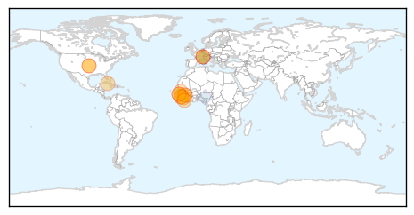
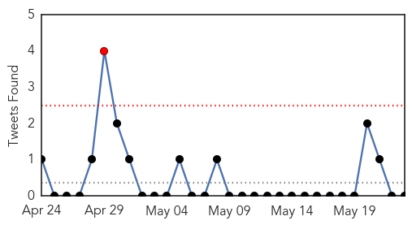
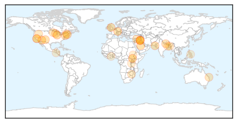

Ebola
30-Day Web Trend
0 alerts, 1 warnings

30-Day Twitter Trend
0 alerts, 0 warnings

Article Locations
Article Confidences

Top Articles:
- 0.999
- Ebola – let us call a spade a spade
- 0.998
- Ebola remains in small Guinea villages, where community resistance is a challenge
- 0.998
- Ebola Outbreak: Liberia declared “Ebola-free”
- 0.996
- UN health agency responds to Ebola spike
- 0.996
- Genomics lab in Liberia helps scientists monitor Ebola virus
- 0.994
- NRI Researcher Helps In Ebola Vaccine Trials
- 0.991
- UN health agency responds to Ebola spike
- 0.989
- Ebola: Anxiety as volunteers return today
- 0.987
- Ebola crisis should teach us a lesson
- 0.969
- All Cuban medical workers return home from W Africa after Ebola fight
- 0.949
- World Health Assembly gives WHO green light to reform emergency and response progamme - World
- 0.938
- World Health Assembly gives WHO green light to reform emergency and response programme
- 0.933
- Ebola flares in Guinea; handling of bodies cited
- 0.921
- Liberian President Ellen Sirleaf Johnson in Abidjan for talks on fixing Africa's Primary Healthcare
- 0.807
- May 22 news: Salmonella outbreak, poverty and vision loss, California oil spill
Top Tweets:
- 0.973
- The last Ebola survivor of his team - World Health Organization http://t.co/NEsvA767Sf ebola EVD
- 0.917
- George Galloway sent package 'infected with deadly virus EBOLA' - http://t.co/pRfx5WTR7b http://t.co/3cllvoprY7 ebola EVD
- 0.909
- WHO approves $100 million emergency fund after Ebola response criticized - CTV News http://t.co/eHCsod7Hpa ebola EVD
- 0.757
- The last Ebola survivor of his team - World Health Organization http://t.co/qNTDAn1SYY
- 0.746
- RT: @neil_bodie BREAKING NEWS!!!! GOVERMENT OFFICAL GETS ‘infected with EBOLA virus IN MAIL http://t.co/VSwuJfodAK … ebo…
- 0.700
- RT: The last Ebola survivor of his team - World Health Organization http://t.co/qNTDAn1SYY
- 0.676
- Irish troops home safe after their brave battle against deadly Ebola - Irish Independent http://t.co/LI8wNysOqP ebola EVD
- 0.640
- 22 May news on avianflu avianinfluenza Ebola EbolaResponse MERS NepalQuake WHA68 are here: http://t.co/Np9HlY25KI
- 0.614
- WHO Director-General was asked to set up a review committee under the International Health Regulations to assess IHR in regards to Ebola
- 0.545
- RT: GeorgeGalloway sent package ‘infected with EBOLA virus http://t.co/B7BepvEP10 http://t.co/0wmOU6punL
- 0.543
- George Galloway sent package 'infected with deadly virus EBOLA' - http://t.co/9XRKVe7ONb http://t.co/BvYiD5POmK
Unknown
30-Day Web Trend
0 alerts, 0 warnings

30-Day Twitter Trend
2 alerts, 0 warnings

Article Locations
Article Confidences

Top Articles:
- 0.966
- Angell Animal Medical Center Warns of Canine Flu Coming to...
- 0.957
- 94 test positive for TB at South Devon school
- 0.953
- Multistate #outbreak of #Salmonella Paratyphi B
- 0.934
- New canine flu virus spreads to Massachusetts
- 0.927
- Health minister calls for preventive measures to fight MERS
- 0.917
- Chicago Tribune
- 0.917
- Chicago Tribune
- 0.917
- Chicago Tribune
- 0.906
- 94 pupils at Teign school test positive for tuberculosis
- 0.894
- Salmonella outbreak
- 0.883
- Pools of threat: brain-eating ameoba in Karachi
- 0.866
- Shi'ite militias deploy to take on Islamic State insurgents near Iraq's Ramadi
- 0.851
- U.S. salmonella outbreak might have triggered by raw tuna
- 0.838
- Outbreak of Tuna Sushi Salmonella Paratyphi Infections in 9 States Sickens 53
- 0.833
- Nepal: WHO marks one month since devastating earthquake as it ramps up aid
- 0.726
- Board's quick action against Legionella praised
- 0.721
- All efforts to prevent monsoon-related diseases
- 0.709
- Plague found in ground squirrel near Boise
- 0.709
- Tips to beat ticks
- 0.692
- Health minister drums up support for Syria’s sanction-battered health sector
- 0.668
- 31 Cases of Salmonella in California Due to Sushi
- 0.644
- SDA offers free health care
- 0.643
- Dumuria health complex staff face negligence accusation
- 0.583
- Preventing malaria in South Sudan, one net at a time - South Sudan
- 0.573
- Nursing being compromised in Bengal government hospitals
- 0.568
- The Caledonian-Record
- 0.558
- To Avoid Lyme Disease, Follow These Six Tips (ICYMI)
- 0.545
- UN accuses S. Sudan fighters of shelling base
- 0.545
- Shiite militia launches counter-offensive on IS group near Iraq's Ramadi
- 0.545
- French jihadists ‘behind IS group suicide bombings in Iraq’
- 0.545
- Burundi opposition figure shot dead
- 0.545
- Romero beatification can ‘help El Salvador grow closer’
- 0.532
- South Sudan: Preventing malaria in South Sudan, one net at a time
- 0.521
- Region, The Freeman Sections, The Freeman
- 0.507
- The Threat To Medical Breakthrough – Daily Guide Ghana
Top Tweets:
- 0.646
- RT: Las tres formas de viajar en el tiempo (y las pelis en las que aparecen), en la revista de junio. http:…
- 0.556
- RT: En la novena edición de la revista 'Dabiq' aparece un artículo titulado '¿Esclavas o prostitutas?', escrito por... http://t…